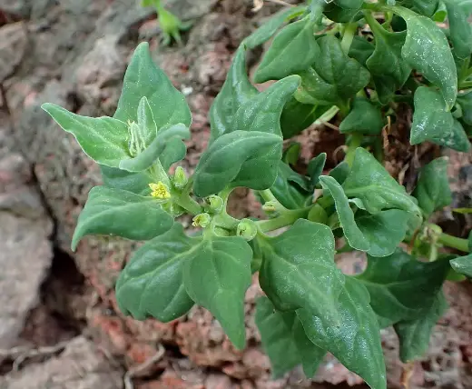

Kōkihi
Kōkihi is a wild green you can forage from October to April in Northland and Auckland, Central North Island, East Coast and Hawke's Bay, Wellington and Manawatū and Top of the South. Sprawling succulent on beaches with thick triangular leaves.

When is kōkihi in season in New Zealand?
Kōkihi is usually in season October to April. Timing shifts with weather, latitude and altitude.
Where does kōkihi grow in New Zealand?
Kōkihi grows in Auckland, Bay of Plenty, Gisborne, Hawke's Bay, Manawatū-Whanganui, Marlborough, Nelson, Northland, Taranaki, Tasman, Waikato, Wellington. Regions: Northland and Auckland, Central North Island, East Coast and Hawke's Bay, Wellington and Manawatū, Top of the South.
How do you recognise kōkihi?
Sprawling succulent on beaches with thick triangular leaves.
How do you harvest kōkihi?
Pinch off young tips and top leaves before the plant flowers, when they are tender and mild. Leave the roots and lower leaves so it regrows. Pick away from roads, sprayed verges and dog-walking paths.
How do you eat kōkihi?
Blanch and use like spinach.
How do you store kōkihi?
Blanch and freeze.
What is kōkihi good for?
Vitamin A, Vitamin C, Iron & calcium.